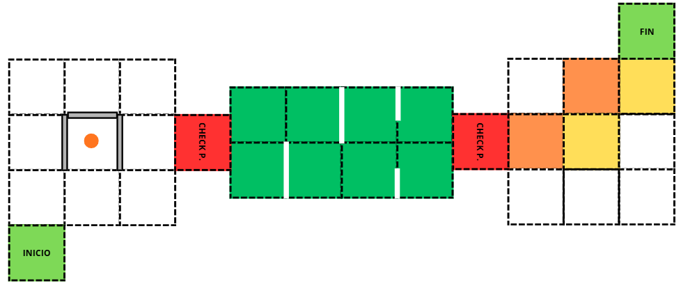
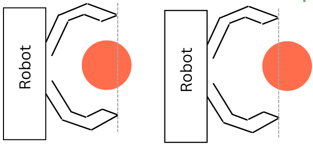
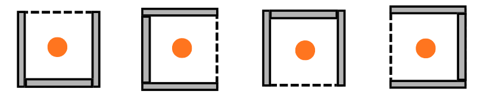
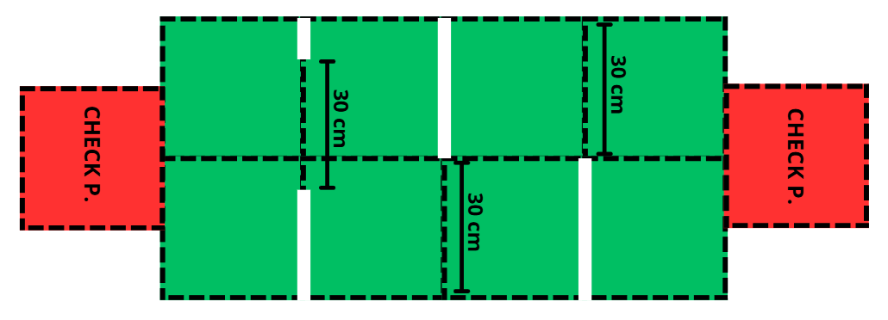
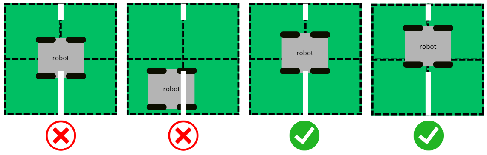
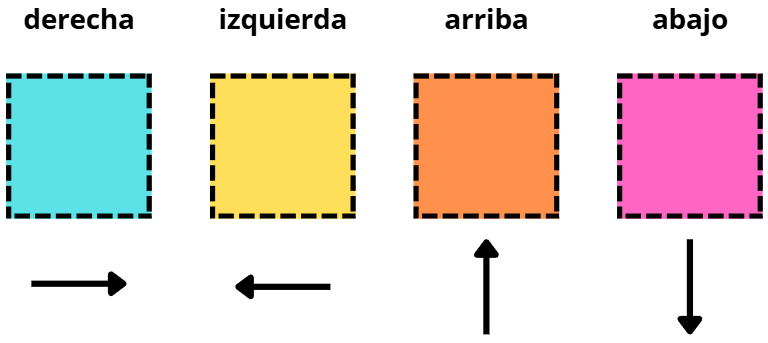
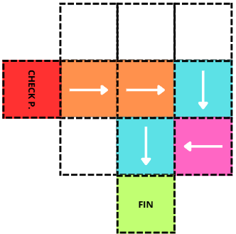
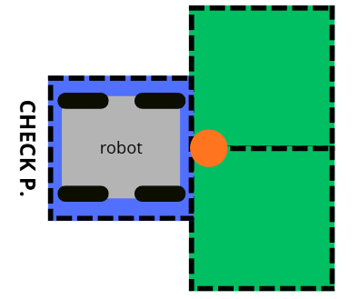

Reto: Levels
Levels (Niveles) es la pista B de Candidates 2026. En vez de un solo laberinto, son tres secciones seguidas, cada una con una habilidad distinta: encontrar una pelota, no cruzar líneas blancas y seguir un camino marcado con colores. Las reglas compartidas con el Maze están en Reglas generales.
Objetivo
El robot empieza en la casilla verde, cruza el checkpoint 1 (fin de la sección 1), luego el checkpoint 2 (fin de la sección 2) y termina en la casilla final de la sección 3. Si algo sale mal, el capitán puede declarar lack of progress y el robot reinicia desde el último checkpoint alcanzado.


Mapa de la pista B (ejemplo). El inicio, los checkpoints y los elementos de cada sección cambian en cada ronda.
Importante
Lo ideal es llevar la pelota todo el recorrido: da puntos extra en cada checkpoint y el bonus final.
La pelota
La pelota es una pelota de golf naranja de 42 ± 2 mm de diámetro.
Qué cuenta como «posesión»: la pelota debe estar más del 50% dentro del perímetro del robot.


Izquierda: posesión válida (más de la mitad de la pelota dentro del robot). Derecha: no cuenta como posesión.
Esta regla aplica en todas las secciones. Si el robot pierde la pelota, se queda donde se perdió y el robot puede ir a recuperarla; nunca regresa a su posición inicial.
Sección 1: la pelota escondida
La pelota está en el centro de una zona de 3 x 3 unidades. La unidad donde está tiene tres paredes y un solo lado libre, que es por donde el robot debe entrar. Una vez que la toma, debe llevarla hasta el checkpoint 1.
Hay cuatro posibles acomodos de las paredes alrededor de la pelota, y cuál toca cambia por ronda.


Los cuatro acomodos posibles de las paredes alrededor de la pelota.
Como no se sabe de antemano en qué lado está la entrada, hay que buscarla. Es un problema de exploración parecido al del Maze, solo que el objetivo es una pelota y no una casilla final.
Sección 2: las líneas blancas
Es una cuadrícula verde de 2 x 4 unidades con líneas blancas de 2 ± 1 cm de ancho y largo variable. Están acomodadas de forma que siempre queda un hueco libre de 30 cm por donde el robot puede pasar sin tocarlas. Las líneas solo cambian de lugar en el eje horizontal.


Ejemplo de acomodo de las líneas blancas. Cada hueco libre mide 30 cm.
Pasar una línea blanca es un lack of progress, y el robot regresa al último checkpoint. Para el juez, se considera que cruzó la línea si más del 50% de una llanta del chasis pasó sobre ella.


Casos para considerar que el robot pasó por la línea blanca.
Truco
Aquí cruzar sin ver la línea sale caro: se pierde el avance y se regresa al checkpoint. Un robot que va despacio y detecta la línea a tiempo gana más que uno rápido que la pisa.
Sección 3: el camino de colores
El objetivo es llegar a la casilla final siguiendo solamente el camino que indican los colores de las unidades. Cada color significa una dirección:


Dirección que indica cada color: cian = derecha, amarillo = izquierda, naranja = arriba, magenta = abajo.
Color |
Dirección |
|---|---|
Cian |
Derecha |
Amarillo |
Izquierda |
Naranja |
Arriba |
Magenta |
Abajo |
Importante
Las direcciones se dan respecto a la pista, no respecto al robot. «Arriba» es hacia donde está el checkpoint desde el que se entra a la sección, aunque el robot esté mirando hacia otro lado.


Ejemplo de acomodo. Las flechas son solo ilustrativas y no vienen en la pista real.
En ese ejemplo, la ruta sería adelante, adelante, derecha, abajo, derecha. La casilla final cambia de lugar en cada ronda, así que la única forma de llegar es seguir los colores. Salirse del camino (solo cuenta si el robot sale completamente de la unidad del camino) es un lack of progress.
Lack of progress en Levels
Además de las reglas generales, en esta pista aplican reglas especiales:
Tres lack of progress en la misma sección: en el cuarto, el robot puede empezar directamente en el checkpoint de la siguiente sección, pero sin puntos por ese checkpoint.
Sección 1: cada lack of progress devuelve la pelota a su posición inicial, escondida.
Secciones 2 y 3: cada lack of progress pone la pelota enfrente del robot (imagen de abajo).
Cuarto lack of progress en la sección 1 o 2 (si quieren pasar al siguiente checkpoint): robot y pelota se colocan como en la imagen, pero en el siguiente checkpoint.


Cómo se coloca la pelota enfrente del robot tras un lack of progress.
Puntuación
Acción |
Puntos |
|---|---|
Tomar posesión de la pelota en la sección 1 y sacarla de su unidad |
15 |
Llegar al checkpoint de la sección 1 sin posesión |
40 |
Llegar al checkpoint de la sección 1 con posesión |
70 |
Llegar al checkpoint de la sección 2 sin posesión |
40 |
Llegar al checkpoint de la sección 2 con posesión |
70 |
Llegar al checkpoint final (sección 3) sin posesión |
50 |
BONUS: llegar al checkpoint final con posesión, sin soltarla de la garra en ningún momento |
85 |
El máximo es de 240 puntos: 15 (sacar la pelota) + 70 + 70 (checkpoints con pelota) + 85 (final con pelota).
Advertencia
Llegar a un checkpoint sin pelota da casi la mitad de puntos. Perder la pelota en la sección 1 cuesta mucho más que perder tiempo recuperándola.
Cómo lo resolvemos
Cada sección se resuelve con su propio comportamiento y todas comparten el mismo robot. La coordinación entre secciones la lleva una máquina de estados con los estados WAITING, SECTION1, SECTION2, SECTION3, DONE y FAULT.
Sección 1: reutiliza el motor de exploración del Maze (mapa, exploración y navegación por casillas) y le agrega los pasos para localizar la pelota y llevarla al checkpoint. La pelota entra por la parte trasera del robot, por eso el robot gira y avanza en reversa para tomarla. Ver Máquina de estados (StateMachine).
Sección 2: el robot recorre los carriles empezando por el central, y si ve una línea blanca con los sensores TCRT5000 retrocede y prueba el carril de la derecha y luego el de la izquierda. Ver Sensor de línea (TCRT5000).
Sección 3: lee el color de cada unidad y gira hacia un rumbo global del giroscopio (no hacia «izquierda o derecha del robot»). Como las direcciones son respecto a la pista, el robot guarda el rumbo con el que empezó la sección y calcula los demás a partir de él. Ver Unidad de Medicion Inercial (IMU) (BNO055) y Sensor de color TCS34725.
La pelota: el mecanismo que la toma y la mantiene está en Mecanismo para recoger la pelota.